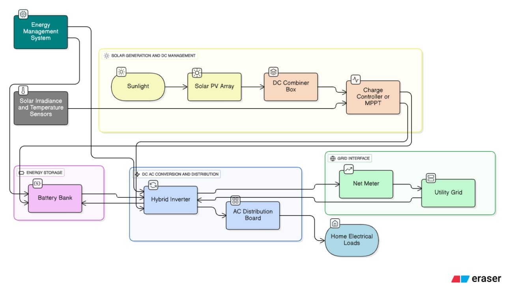
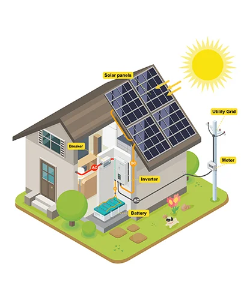
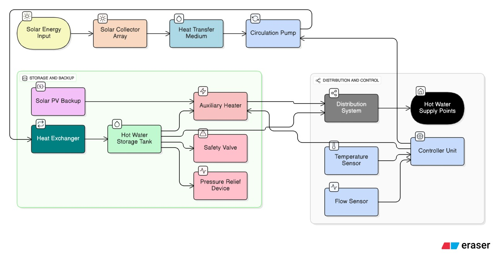
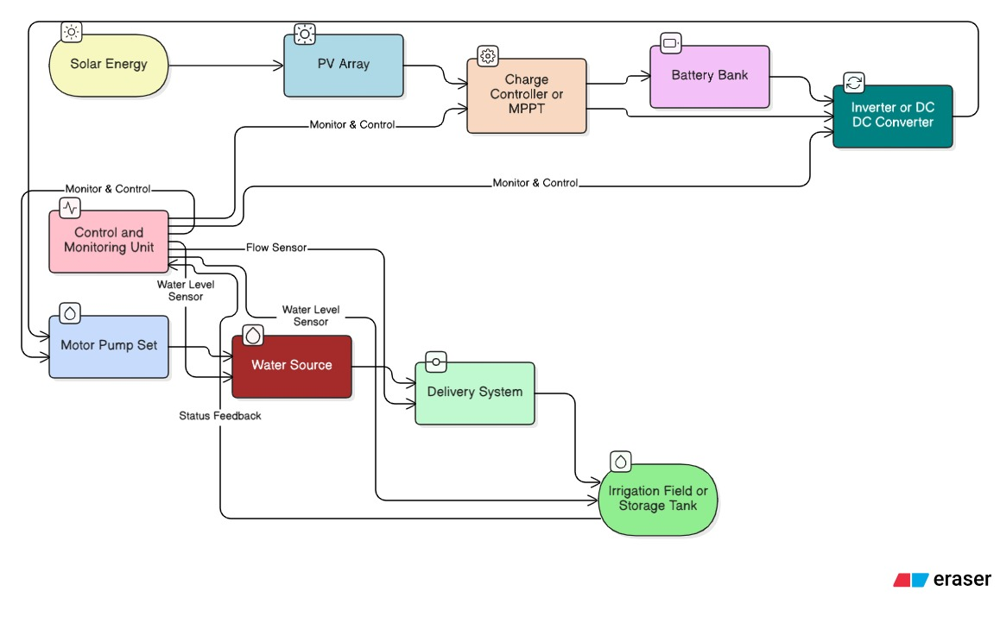
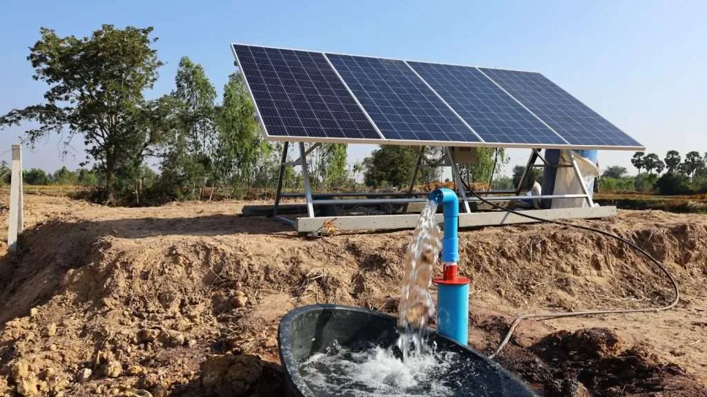

Click an Assignment Card Above to Load Details
The full system architecture, diagrams, and technical explanation will appear here.
#1 ⚡ 5 kW Residential Hybrid PV System

Diagram: PV Array, Hybrid Inverter, Battery, Grid Connection, Load Panel
Key Architecture
1.Solar PV Array: Multiple 400 W PV modules totaling 5 kW peak power, connected in series/parallel to generate DC electricity.
2.DC Disconnect Switch: Safety device to isolate the PV array from the system.
3.Hybrid Inverter: Core component that manages DC-to-AC conversion, grid synchronization, and battery charge/discharge cycles.
4.Battery Bank (e.g., 10 kWh Li-ion): Stores excess energy for use during grid outages or night time.
5.AC Distribution Box/Load Panel: Supplies power to the residential AC loads (lights, appliances).
6.Smart Meter/Net Meter: Measures electricity drawn from and fed back to the main utility grid.
7.Utility Grid Connection: Connection point to the external power network.
Technical Explanation

Real-world residential solar installation
The system harnesses solar irradiance (sunlight) as its primary energy source. The conversion process begins when photovoltaic (PV) modules convert solar photons directly into direct current (DC) electricity through the photovoltaic effect. This DC power is regulated by an advanced hybrid inverter, which prioritizes the immediate energy demands of household loads. Any excess DC energy is stored in the battery bank, ensuring power availability after sunset or during grid outages. Once the batteries are fully charged and household needs are met, any remaining surplus power is exported to the utility grid via a net-metering mechanism.
The primary output/utilization of the system is the continuous supply of clean, renewable AC electricity to the home, substantially reducing electricity bills. In real-world applications, this system offers a powerful combination of energy independence, financial savings, and enhanced grid resilience by providing reliable backup power—making it a sustainable and vital component of modern residential infrastructure.
#2 🔥 2000 L/day Hostel SWH System

Diagram: Collectors, Storage Tank, Circulation Pump, Auxiliary Heater
Key Architecture
1.Solar Thermal Collectors (ETC/FPC): Large array of collectors installed on the rooftop to absorb solar thermal energy.
2.Insulated Hot Water Storage Tank (2000 L capacity): Centralized tank to store the heated water and maintain temperature.
3.Circulation Pump (Optional for Forced Circulation): Moves the heat transfer fluid/water between the collectors and the tank.
4.Controller & Sensors: Monitors temperatures in the collector and tank, controlling the pump operation for optimal heat transfer.
5.Auxiliary Heater (Electric/Gas): Backup heater to ensure hot water supply during prolonged cloudy days.
6.Hostel Hot Water Distribution Network: Pipes delivering hot water to bathrooms and kitchens.
Technical Explanation

Institutional solar water heating system
This system relies on solar irradiance (sunlight) as its primary thermal energy source. The conversion process takes place within solar thermal collectors, typically Evacuated Tube Collectors (ETC) known for their high efficiency. These collectors absorb solar radiation and convert it into heat, which is then transferred to the water circulating through them. The heated water is pumped or naturally circulated via the thermosiphon effect into a large, highly insulated storage tank with a capacity of 2000 liters, meeting the hostel's daily hot water demand.
The primary output/utilization of this system is the supply of sanitary hot water (typically between $55^\circ \text{C}$ and $65^\circ \text{C}$) for daily use by hostel residents. An auxiliary heater is incorporated to ensure continuous supply during low solar conditions.
The real-world relevance of this design lies in its ability to achieve massive operational cost savings by displacing the electricity or fuel otherwise required for conventional large-scale water heating. This makes it an essential and highly sustainable solution for institutional buildings.
#3 💧 Off-Grid Irrigation Pumping

Diagram: PV Array, MPPT Controller, Submersible Pump, Water Source
Key Architecture
1.Solar PV Array (Primary Energy Source): Converts sunlight to DC electricity for the pump.
2.Maximum Power Point Tracking (MPPT) Controller/Drive: Optimizes the power output from the PV array to efficiently match the pump's load.
3.Submersible/Surface Pump (DC or AC with Inverter): Lifts water from the source (well, borewell, or river).
4.Water Source: Well, borewell, river, or pond.
5.Storage Tank/Reservoir (Optional but recommended): Stores pumped water for irrigation use during non-sunny hours.
6.Drip/Sprinkler Irrigation System: Distribution network delivering water to the crops.
Technical Explanation

Agricultural solar pumping installation
The irrigation system utilizes solar irradiance as its primary energy source. The conversion process begins at the photovoltaic (PV) array, which directly converts sunlight into direct current (DC) electrical energy. This DC power is regulated by a dedicated pump controller—often equipped with Maximum Power Point Tracking (MPPT)—to ensure optimal power transfer. The controller drives a high-efficiency pump, serving as the primary output/utilization component, which draws water from the source (such as a borewell) and supplies it either directly to the irrigation system or to an elevated storage tank.
This design is particularly valuable for off-grid agricultural applications, as it eliminates dependence on costly diesel generators or unreliable utility connections. By providing a sustainable, dependable, and cost-free source of power for water management, the system significantly reduces operating expenses and enhances food and water security in remote farming communities.